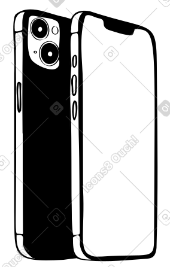
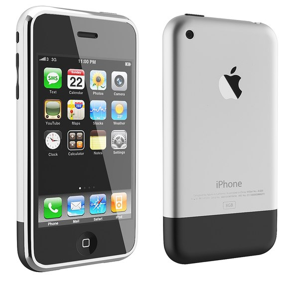
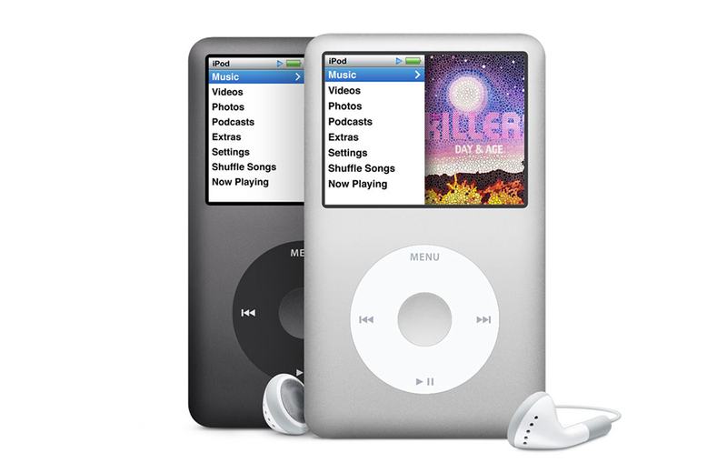

STEVE JOBS
Steve Jobs, nascido em 1955 em São Francisco, foi um visionário e cofundador da Apple Inc. Após uma infância marcada pela adoção, ele estudou brevemente na Reed College antes de fundar a Apple em 1976 com Steve Wozniak e Ronald Wayne, lançando o Apple I e, posteriormente, o bem-sucedido Apple II.
Depois de deixar a Apple em 1985 devido a desavenças, Jobs fundou a NeXT e adquiriu a Pixar, onde revolucionou a animação digital. Em 1997, a Apple, enfrentando dificuldades financeiras, comprou a NeXT, trazendo Jobs de volta. Sob sua liderança, a Apple lançou produtos icônicos como iMac, iPod, iPhone e iPad, transformando a tecnologia e a cultura.

Jobs era conhecido por seu estilo de liderança intenso, com ênfase no design e na experiência do usuário. Ele faleceu em 2011, mas seu legado continua a moldar a interação com a tecnologia e inspira empreendedores em todo o mundo.
1976 2024
Antes e depois do Iphone

